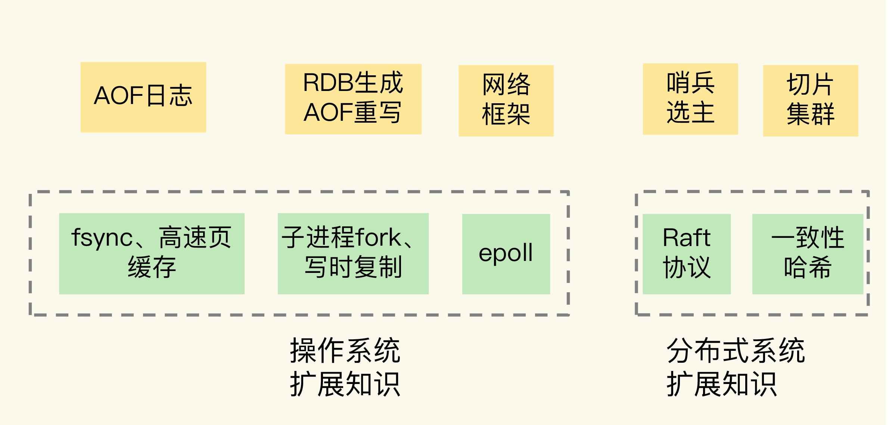

- 00 开篇词 这样学Redis，才能技高一筹.md.html
- 01 基本架构：一个键值数据库包含什么？.md.html
- 02 数据结构：快速的Redis有哪些慢操作？.md.html
- 03 高性能IO模型：为什么单线程Redis能那么快？.md.html
- 04 AOF日志：宕机了，Redis如何避免数据丢失？.md.html
- 05 内存快照：宕机后，Redis如何实现快速恢复？.md.html
- 06 数据同步：主从库如何实现数据一致？.md.html
- 07 哨兵机制：主库挂了，如何不间断服务？.md.html
- 08 哨兵集群：哨兵挂了，主从库还能切换吗？.md.html
- 09 切片集群：数据增多了，是该加内存还是加实例？.md.html
- 10 第1～9讲课后思考题答案及常见问题答疑.md.html
- 11 “万金油”的String，为什么不好用了？.md.html
- 12 有一亿个keys要统计，应该用哪种集合？.md.html
- 13 GEO是什么？还可以定义新的数据类型吗？.md.html
- 14 如何在Redis中保存时间序列数据？.md.html
- 15 消息队列的考验：Redis有哪些解决方案？.md.html
- 16 异步机制：如何避免单线程模型的阻塞？.md.html
- 17 为什么CPU结构也会影响Redis的性能？.md.html
- 18 波动的响应延迟：如何应对变慢的Redis？（上）.md.html
- 19 波动的响应延迟：如何应对变慢的Redis？（下）.md.html
- 20 删除数据后，为什么内存占用率还是很高？.md.html
- 21 缓冲区：一个可能引发“惨案”的地方.md.html
- 22 第11～21讲课后思考题答案及常见问题答疑.md.html
- 23 旁路缓存：Redis是如何工作的？.md.html
- 24 替换策略：缓存满了怎么办？.md.html
- 25 缓存异常（上）：如何解决缓存和数据库的数据不一致问题？.md.html
- 26 缓存异常（下）：如何解决缓存雪崩、击穿、穿透难题？.md.html
- 27 缓存被污染了，该怎么办？.md.html
- 28 Pika：如何基于SSD实现大容量Redis？.md.html
- 29 无锁的原子操作：Redis如何应对并发访问？.md.html
- 30 如何使用Redis实现分布式锁？.md.html
- 31 事务机制：Redis能实现ACID属性吗？.md.html
- 32 Redis主从同步与故障切换，有哪些坑？.md.html
- 33 脑裂：一次奇怪的数据丢失.md.html
- 34 第23~33讲课后思考题答案及常见问题答疑.md.html
- 35 Codis VS Redis Cluster：我该选择哪一个集群方案？.md.html
- 36 Redis支撑秒杀场景的关键技术和实践都有哪些？.md.html
- 37 数据分布优化：如何应对数据倾斜？.md.html
- 38 通信开销：限制Redis Cluster规模的关键因素.md.html
- 39 Redis 6.0的新特性：多线程、客户端缓存与安全.md.html
- 40 Redis的下一步：基于NVM内存的实践.md.html
- 41 第35～40讲课后思考题答案及常见问题答疑.md.html
- 加餐 01 经典的Redis学习资料有哪些？.md.html
- 加餐 02 用户Kaito：我是如何学习Redis的？.md.html
- 加餐 03 用户Kaito：我希望成为在压力中成长的人.md.html
- 加餐 04 Redis客户端如何与服务器端交换命令和数据？.md.html
- 加餐 05 Redis有哪些好用的运维工具？.md.html
- 加餐 06 Redis的使用规范小建议.md.html
- 加餐 07 从微博的Redis实践中，我们可以学到哪些经验？.md.html
- 结束语 从学习Redis到向Redis学习.md.html
- 捐赠
加餐 01 经典的Redis学习资料有哪些？
咱们课程的“基础篇”已经结束了。在这个模块，我们学习了 Redis 的系统架构、数据结构、线程模型、持久化、主从复制和切片集群这些核心知识点，相信你已经初步构建了自己的一套基础知识框架。
不过，如果想要持续提升自己的技术能力，还需要不断丰富自己的知识体系，那么，阅读就是一个很好的方式。所以，这节课，我就给你推荐几本优秀的书籍，以及一些拓展知识面的其他资料，希望能够帮助你全面掌握 Redis。
经典书籍
在学习 Redis 时，最常见的需求有三个方面。
- 日常使用操作：比如常见命令和配置，集群搭建等；
- 关键技术原理：比如我们介绍过的 IO 模型、AOF 和 RDB 机制等；
- 在实际使用时的经验教训，比如，Redis 响应变慢了怎么办？Redis 主从库数据不一致怎么办？等等。
接下来，我就根据这些需求，把参考资料分成工具类、原理类、实战类三种。我们先来看工具类参考资料。
工具书：《Redis 使用手册》
一本好的工具书，可以帮助我们快速地了解或查询 Redis 的日常使用命令和操作方法。我要推荐的《Redis 使用手册》，就是一本非常好用的工具书。
在这本书中，作者把 Redis 的内容分成了三大部分，分别是“数据结构与应用”“附加功能”和“多机功能”。其中，我认为最有用的就是“数据结构与应用”的内容，因为它提供了丰富的操作命令介绍，不仅涵盖了 Redis 的 5 大基本数据类型的主要操作命令，还介绍了 4 种扩展数据类型的命令操作，包括位图、地址坐标、HyperLogLog 和流。只要这本书在手边，我们就能很轻松地了解和正确使用 Redis 的大部分操作命令了。
不过，如果你想要了解最全、最新的 Redis 命令操作，我建议你把 Redis 的命令参考网站收录到你的浏览器书签中，随用随查。目前，Redis 官方提供的所有命令操作参考肯定是最全、最新的，建议你优先使用这个官方网站。在这个网页上查找命令操作非常方便，我们既可以通过命令操作的名称直接查找，也可以根据 Redis 的功能，分类查找对应功能下的操作，例如和集群相关的操作，和发布订阅相关的操作。考虑到有些同学可能想看中文版，我再给你提供一个翻译版的命令参考。
除了提供 Redis 的命令操作介绍外，《Redis 使用手册》还提供了“附加功能”部分，介绍了 Redis 数据库的管理操作和过期 key 的操作，这对我们进行 Redis 数据库运维（例如迁移数据、清空数据库、淘汰数据等）提供了操作上的指导。
有了工具手册，我们就能很轻松地掌握不同命令操作的输入参数、返回结果和复杂度了。接下来，就是进一步了解各种机制背后的原理了，我再跟你分享一本原理书。
原理书：《Redis 设计与实现》
虽然《Redis 设计与实现》和《Redis 使用手册》是同一个作者写的，但是它们的侧重点不一样，这本书更加关注 Redis 关键机制的实现原理。
介绍 Redis 原理的资料有很多，但我认为，这本书讲解得非常透彻，尤其是在 Redis 底层数据结构、RDB 和 AOF 持久化机制，以及哨兵机制和切片集群的介绍上，非常容易理解，我建议你重点学习下这些部分的内容。
除了文字讲解，这本书还针对一些难点问题，例如数据结构的组成、哨兵实例间的交互过程、切片集群实例的交互过程等，都使用了非常清晰的插图来表示，可以最大程度地降低学习难度。
其实，这本书也是我自己读的第一本 Redis 参考书，可以说，是它把我领进了 Redis 原理的大门。当时在学习时，正是因为有了这些插图的帮助，我才能快速地搞懂核心原理。直到今天，我都还记得这本书中的一些插图，真是受益匪浅。
虽然这本书的出版日期比较早（它针对的是 Redis 3.0），但是里面讲的很多原理现在依然是适用的，它可以帮助你在从入门 Redis 到精通的道路上，迈进一大步。
实战书：《Redis 开发与运维》
在实战方面，《Redis 开发与运维》是一本不错的参考书。
首先，它介绍了 Redis 的 Java 和 Python 客户端，以及 Redis 用于缓存设计的关键技术和注意事项，这些内容在其他参考书中不太常见，你可以重点学习下。
其次，它围绕客户端、持久化、主从复制、哨兵、切片集群等几个方面，着重介绍了在日常的开发运维过程中遇到的问题和“坑”，都是经验之谈，可以帮助你提前做规避。
另外，这本书还针对 Redis 阻塞、优化内存使用、处理 bigkey 这几个经典问题，提供了解决方案，非常值得一读。在阅读的时候，你可以把目录里的问题整理一下，做成列表，这样，在遇到问题的时候，就可以对照着这个列表，快速地找出原因，并且利用书中的方案去解决问题了。
当然，要想真正提升实战能力，光读书是远远不够的，毕竟，“纸上得来终觉浅”。所以，我还想再给你分享两条建议。
第一个建议是阅读源码。读源码其实也是一种实战锻炼，可以帮助你从代码逻辑中彻底理解 Redis 系统的实际运行机制，当遇到问题时，可以直接从代码层面进行定位、分析和解决问题。阅读 Redis 源码，最直接的材料就是 Redis 在 GitHub 上的源码库。另外，有一个网站提供了 Redis 3.0 源码的部分中文注释，你也可以参考一下。
另外，我们还需要亲自动手实践。在课程的留言中，我看到有同学说“没有服务器无法实践”，其实，Redis 运行后本身就是一个进程，我们是可以直接使用自己的电脑进行部署的。只要不是性能测试，在功能测试或者场景模拟上，自己电脑的环境一般都是可以胜任的。比如说，要想部署主从集群或者切片集群，模拟主库故障，我们完全可以在自己电脑上起多个 Redis 实例来完成，只要保证它们的端口号不同，就可以了。
好了，关于 Redis 本身的书籍的推荐，就先告一段落了，接下来，我想再给你分享一些扩展内容。
扩展阅读方向
通过前面几节课的学习，我相信你一定已经发现了，Redis 的很多关键功能，其实和操作系统底层的实现机制是相关的，比如说，非阻塞的网络框架、RDB 生成和 AOF 重写时涉及到的 fork 和写时复制机制，等等。另外，Redis 主从集群中的哨兵机制，以及切片集群的数据分布还涉及到一些分布式系统的内容。
我用一张图片，展示一下 Redis 的关键机制和操作系统、分布式系统的对应知识点。

AOF 日志的刷盘时机和操作系统的 fsync 机制、高速页缓存的刷回有关，而网络框架跟 epoll 有关，RDB 生成和 AOF 重写与 fork、写时复制有关（我在前面第 3、4、5 讲上讲过它们的关联）。
此外，我在【第 8 讲】介绍的哨兵选主过程，其实是分布式系统中的经典的 Raft 协议的执行过程，如果你比较了解 Raft 协议，就能很轻松地掌握哨兵选主的运行机制了。在【第 9 讲】，我们学习了实现切片集群的 Redis Cluster 方案，其实，业界还有一种实现方案，就是 ShardedJedis，而它就用到了分布式系统中经典的一致性哈希机制。
所以，如果说你希望自己的实战能力能够更强，我建议你读一读操作系统和分布式系统方面的经典教材，比如《操作系统导论》。尤其是这本书里对进程、线程的定义，对进程 API、线程 API 以及对文件系统 fsync 操作、缓存和缓冲的介绍，都是和 Redis 直接相关的；再比如，《大规模分布式存储系统：原理解析与架构实战》中的分布式系统章节，可以让你掌握 Redis 主从集群、切片集群涉及到的设计规范。了解下操作系统和分布式系统的基础知识，既能帮你厘清容易混淆的概念（例如 Redis 主线程、子进程），也可以帮助你将一些通用的设计方法（例如一致性哈希）应用到日常的实践中，做到融会贯通，举一反三。
小结
这节课，我给你推荐了三本参考书，分别对应了 Redis 的命令操作使用、关键机制的实现原理，以及实战经验，还介绍了 Redis 操作命令快速查询的两个网站，这可是我们日常使用 Redis 的必备工具，可以提升你使用操作 Redis 的效率。另外，对于 Redis 关键机制涉及到的扩展知识点，我从操作系统和分布式系统两个方面进行了补充。
Redis 的源码阅读是成为 Redis 专家的必经之路，你可以阅读一下 Redis 在 GitHub 上的源码库，如果觉得有难度，也可以从带有中文注释的源码阅读网站入手。
最后，我也想请你聊一聊，你的 Redis 学习资料都有哪些呢？欢迎在留言区分享一下，我们一起进步。另外，如果你觉得今天的内容对你有所帮助，也欢迎你分享给你的朋友或同事。
© 2019 - 2023 Liangliang Lee. Powered by gin and hexo-theme-book.